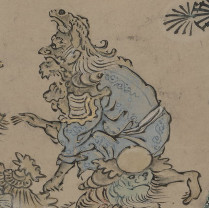

魚の化物。肌は薄黒く、魚の形の兜をかぶっている。顎ひげを生やし、白い髪を肩に垂らしている。水色の衣を着て、肩当てをつけ、片膝を立てて座っている。
出典：親書誌：U426_nichibunken_0151：武家はんじょう；ブケハンジョウ／日付：2010／資源識別子：U426_nichibunken_0151_0002_0000
Copyright (c)2010- International Research Center for Japanese Studies, Kyoto, Japan. All rights reserved.